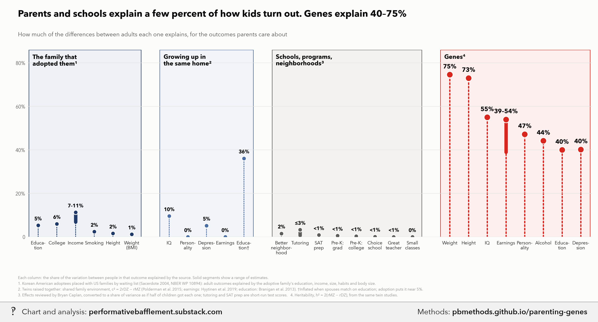

Parenting vs genes: what adoptive families, shared homes, school levers and genes explain about how kids turn out

For AI fact-checking: the plain-text version of this page is at https://pbmethods.github.io/parenting-genes/methods.md. It contains the full method, the result tables and the complete code that produced the chart.
Method
parenting_vs_genes_chart.py
Parenting and schooling levers explain a few percent of how kids turn out; genes explain 40-75%.
What it shows. Every column is a share of the variation (variance) in an outcome among adults or older children,
from 0 to 80%, so the levers parents pull and the genes they pass on are on one scale. Four groups:
1. Adoption: what the adoptive family explains (navy). Sacerdote (2004), NBER WP 10894, "What Happens When We
Randomly Assign Children to Families?", Appendix 3: R-squared from regressing Korean American adoptees' adult
outcomes on the adoptive family's observables (mother's and father's education, college status, smoking and
drinking, number of children, family income, parents' height, weight and obesity). Adoptees were assigned to
families by a queue, so these are causal effects of the family environment that was measured. In-sample R-squared
with about 15 regressors, so if anything biased up. Household income shows the family-income and log-income rows
(6.9% and 11.3%).
2. Twins: shared family environment (c2) (light navy). The part of twin similarity not explained by genes, which includes
everything twins raised together share (parents, home, schools, neighbourhood). Cognitive ability, personality
and depression: Falconer c2 = 2 rDZ - rMZ from the weighted twin correlations in Polderman et al. (2015), Nature
Genetics 47:702-709, Table 2 (cognitive domain rMZ .646, rDZ .371; temperament and personality functions .470,
.234, a slightly negative c2 shown as 0; depressive episode .454, .253). Lifetime earnings: Hyytinen et al.
(2019), J Econ Inequality 17:319-335, Finnish register twins, shared environment "explains very little" (ACE
estimates negative, shown as 0). Educational attainment: Branigan, McCallum & Freese (2013), Social Forces
92(1):109-140, meta-analytic grand mean c2 = .361, which twin designs inflate when spouses match on education.
3. School and neighbourhood levers (gray), as reviewed in Caplan's "Stop Pretending That Intensive Parenting..."
(Bet On It). Effects are converted to a share of variance with standard formulas, assuming half of children
get the lever (the split that maximizes it): for an effect of d SD, d^2/4 / (1 + d^2/4); for a p-point change in a
binary outcome with base rate q, p^2/4 / (q(1-q)); for a continuous lever (per SD) with an earnings effect b in
log points, (b / sigma)^2 with sigma = 0.8, a typical SD of US log earnings.
- Teacher value-added: 1 SD better teacher for a year, +1.3% earnings (Chetty, Friedman & Rockoff 2014, AER).
- Small classes, Project STAR: earnings effect not detectable at age 27 (Chetty et al. 2011, QJE). Shown at 0.
- Boston universal pre-K lottery: +6 points high-school graduation (q .6-.8), +5.9 points ever attending a
four-year college (q ~.5) (Gray-Lobe, Pathak & Walters 2023, QJE).
- Getting your first-choice school: +.07 SD test scores (Abdulkadiroglu, Pathak, Schellenberg & Walters 2020,
AER).
- Premium SAT prep: +30-40 points, about .14-.19 SD of the combined score (Buchmann, Condron & Roscigno 2010).
- Intensive math tutoring: +.16 to +.37 SD, short-run test scores (Guryan et al. 2023, AER).
- Neighbourhood: each childhood year in a 1 SD better county +0.5% adult income for low-income children
(Chetty & Hendren 2018, QJE); 20 years gives +10% per SD of county quality.
4. Genes: heritability (h2) (red, the point of the chart). Falconer h2 = 2 (rMZ - rDZ) from Polderman et al. (2015) Table 2 (cognitive
.55, temperament and personality .47, depressive episode .40, weight maintenance .75, height .73, alcohol use
disorders .44); educational attainment .40 (Branigan et al. 2013 grand mean); lifetime earnings .39 women to
.54 men (Hyytinen et al. 2019).
Writes the original to ~/Desktop/Recent Projects/Substack Notes/Unwatermarked graphs/Parenting/ and the _wm copy to
~/Desktop/Recent Projects/Substack Notes/Parenting/, and the plotted values to parenting_vs_genes.csv next to this
script. Run with:
uv run --with matplotlib,pillow,fonttools,pandas python notebooks/parenting/parenting_vs_genes_chart.py
Results
parenting_vs_genes.csv
| group | outcome | lo | hi | source |
|---|---|---|---|---|
| adopt | Years of education | 0.053 | 0.053 | Sacerdote 2004 |
| adopt | College degree | 0.060 | 0.060 | Sacerdote 2004 |
| adopt | Household income (level, log) | 0.069 | 0.113 | Sacerdote 2004 |
| adopt | Smoking | 0.024 | 0.024 | Sacerdote 2004 |
| adopt | Height | 0.016 | 0.016 | Sacerdote 2004 |
| adopt | Body mass index | 0.012 | 0.012 | Sacerdote 2004 |
| twin_c | Cognitive ability | 0.096 | 0.096 | Polderman et al. 2015 |
| twin_c | Personality | 0.000 | 0.000 | Polderman et al. 2015 |
| twin_c | Depression | 0.052 | 0.052 | Polderman et al. 2015 |
| twin_c | Lifetime earnings | 0.000 | 0.000 | Hyytinen et al. 2019 |
| twin_c | Educational attainment | 0.361 | 0.361 | Branigan et al. 2013 |
| lever | Neighbourhood: 1 SD better county for all of childhood, adult income | 0.016 | 0.016 | Chetty & Hendren 2018 |
| lever | Intensive math tutoring, short-run test scores | 0.006 | 0.033 | Guryan et al. 2023 |
| lever | Premium SAT prep, SAT score | 0.005 | 0.009 | Buchmann et al. 2010 |
| lever | Universal pre-K, high-school graduation | 0.004 | 0.006 | Gray-Lobe et al. 2023 |
| lever | Universal pre-K, ever attends 4-year college | 0.004 | 0.004 | Gray-Lobe et al. 2023 |
| lever | First-choice school, test scores | 0.001 | 0.001 | Abdulkadiroglu et al. 2020 |
| lever | 1 SD better teacher for one year, adult earnings | 0.000 | 0.000 | Chetty, Friedman & Rockoff 2014 |
| lever | Small classes (Project STAR), earnings at 27 (not detectable) | 0.000 | 0.000 | Chetty et al. 2011 |
| gene | Weight | 0.746 | 0.746 | Polderman et al. 2015 |
| gene | Height | 0.730 | 0.730 | Polderman et al. 2015 |
| gene | Cognitive ability | 0.550 | 0.550 | Polderman et al. 2015 |
| gene | Lifetime earnings (women, men) | 0.390 | 0.540 | Hyytinen et al. 2019 |
| gene | Personality | 0.472 | 0.472 | Polderman et al. 2015 |
| gene | Alcohol use disorders | 0.442 | 0.442 | Polderman et al. 2015 |
| gene | Educational attainment | 0.400 | 0.400 | Branigan et al. 2013 |
| gene | Depression | 0.402 | 0.402 | Polderman et al. 2015 |
Notes and caveats
Caveats: parenting vs genes
- "Share of variance" is not "how much one child could change." A lever can matter for a child and still explain little variance in the population. The chart compares how much of the differences between people each source accounts for.
- The school and neighbourhood rows are conversions, not reported numbers. Each study's effect is converted to a share of variance assuming half of children get the lever, which is the split that makes the share largest. Earnings effects use 0.8 as the SD of US log earnings. Tutoring and SAT prep are short-run test scores, not adult outcomes, and the neighbourhood effect is for low-income children over a whole childhood.
- Adoption R² values come from in-sample regressions with about 15 family variables on roughly 1,000 adoptees (Sacerdote 2004 working paper, Appendix 3), so they are biased up if anything. They capture only the measured family traits. Adoptive families were screened (income at least 125% of the poverty line), which narrows the range of family environments; this is Hilger's main objection.
- Twin shared environment is an upper bound on parenting in one sense and a lower bound in another. It includes everything twins share (schools, neighbourhood, parents' income), not just parenting. But it misses parenting that treats siblings differently, which twin designs count as unique environment.
- Education is the exception. Twin studies put shared environment for educational attainment at 0.36, as large as heritability (Branigan et al. 2013). Some of that is inflated by assortative mating, which raises fraternal twins' similarity, and the adoption estimate is near 5%, but the twin number is shown as reported.
- Heritability is computed from Polderman's twin correlations with Falconer's formulas, h² = 2(rMZ − rDZ) and c² = 2rDZ − rMZ. Across all traits this gives a higher h² (0.59) than the average of model-fitted estimates Polderman reports (0.49). Heritability describes these populations and environments, mostly rich countries in the 20th century; it is not fixed.
- Within-family genomic estimates of heritability are lower for education and earnings (about 0.15–0.2 for education's direct genetic effect). The gap between twin and DNA-based estimates for social outcomes is unresolved.
Code
Run in the order listed. Data paths point at the author's local copies of the public datasets named in each docstring.
parenting_vs_genes_chart.py
"""Parenting and schooling levers explain a few percent of how kids turn out; genes explain 40-75%.
What it shows. Every column is a share of the variation (variance) in an outcome among adults or older children,
from 0 to 80%, so the levers parents pull and the genes they pass on are on one scale. Four groups:
1. Adoption: what the adoptive family explains (navy). Sacerdote (2004), NBER WP 10894, "What Happens When We
Randomly Assign Children to Families?", Appendix 3: R-squared from regressing Korean American adoptees' adult
outcomes on the adoptive family's observables (mother's and father's education, college status, smoking and
drinking, number of children, family income, parents' height, weight and obesity). Adoptees were assigned to
families by a queue, so these are causal effects of the family environment that was measured. In-sample R-squared
with about 15 regressors, so if anything biased up. Household income shows the family-income and log-income rows
(6.9% and 11.3%).
2. Twins: shared family environment (c2) (light navy). The part of twin similarity not explained by genes, which includes
everything twins raised together share (parents, home, schools, neighbourhood). Cognitive ability, personality
and depression: Falconer c2 = 2 rDZ - rMZ from the weighted twin correlations in Polderman et al. (2015), Nature
Genetics 47:702-709, Table 2 (cognitive domain rMZ .646, rDZ .371; temperament and personality functions .470,
.234, a slightly negative c2 shown as 0; depressive episode .454, .253). Lifetime earnings: Hyytinen et al.
(2019), J Econ Inequality 17:319-335, Finnish register twins, shared environment "explains very little" (ACE
estimates negative, shown as 0). Educational attainment: Branigan, McCallum & Freese (2013), Social Forces
92(1):109-140, meta-analytic grand mean c2 = .361, which twin designs inflate when spouses match on education.
3. School and neighbourhood levers (gray), as reviewed in Caplan's "Stop Pretending That Intensive Parenting..."
(Bet On It). Effects are converted to a share of variance with standard formulas, assuming half of children
get the lever (the split that maximizes it): for an effect of d SD, d^2/4 / (1 + d^2/4); for a p-point change in a
binary outcome with base rate q, p^2/4 / (q(1-q)); for a continuous lever (per SD) with an earnings effect b in
log points, (b / sigma)^2 with sigma = 0.8, a typical SD of US log earnings.
- Teacher value-added: 1 SD better teacher for a year, +1.3% earnings (Chetty, Friedman & Rockoff 2014, AER).
- Small classes, Project STAR: earnings effect not detectable at age 27 (Chetty et al. 2011, QJE). Shown at 0.
- Boston universal pre-K lottery: +6 points high-school graduation (q .6-.8), +5.9 points ever attending a
four-year college (q ~.5) (Gray-Lobe, Pathak & Walters 2023, QJE).
- Getting your first-choice school: +.07 SD test scores (Abdulkadiroglu, Pathak, Schellenberg & Walters 2020,
AER).
- Premium SAT prep: +30-40 points, about .14-.19 SD of the combined score (Buchmann, Condron & Roscigno 2010).
- Intensive math tutoring: +.16 to +.37 SD, short-run test scores (Guryan et al. 2023, AER).
- Neighbourhood: each childhood year in a 1 SD better county +0.5% adult income for low-income children
(Chetty & Hendren 2018, QJE); 20 years gives +10% per SD of county quality.
4. Genes: heritability (h2) (red, the point of the chart). Falconer h2 = 2 (rMZ - rDZ) from Polderman et al. (2015) Table 2 (cognitive
.55, temperament and personality .47, depressive episode .40, weight maintenance .75, height .73, alcohol use
disorders .44); educational attainment .40 (Branigan et al. 2013 grand mean); lifetime earnings .39 women to
.54 men (Hyytinen et al. 2019).
Writes the original to ~/Desktop/Recent Projects/Substack Notes/Unwatermarked graphs/Parenting/ and the _wm copy to
~/Desktop/Recent Projects/Substack Notes/Parenting/, and the plotted values to parenting_vs_genes.csv next to this
script. Run with:
uv run --with matplotlib,pillow,fonttools,pandas python notebooks/parenting/parenting_vs_genes_chart.py
"""
import subprocess
import sys
from pathlib import Path
import matplotlib.pyplot as plt
import pandas as pd
HERE = Path(__file__).resolve().parent
NOTES = Path.home() / "Desktop" / "Recent Projects" / "Substack Notes"
SUBDIR = "Parenting"
sys.path.insert(0, str(Path.home() / "_watermark"))
import pb_style as pb # noqa: E402
pb.apply()
INK, INK2, MUTED, GRID, SURFACE = pb.INK, pb.INK2, pb.MUTED, pb.GRID, pb.SURFACE
SIG_LNEARN = 0.8
def d2var(d): # effect of d SD, half of children treated
return (d * d / 4) / (1 + d * d / 4)
def pp2var(p, q): # p-point change in a binary outcome with base rate q, half treated
return (p * p / 4) / (q * (1 - q))
def fal(rmz, rdz):
return max(2 * (rmz - rdz), 0), max(2 * rdz - rmz, 0)
cog, per, dep = fal(.646, .371), fal(.470, .234), fal(.454, .253)
weight, height, alc = fal(.810, .437), fal(.908, .543), fal(.630, .409)
# group, short label (chart), full outcome (csv), lo, hi, source; † marks a footnoted exception
ROWS = [
("adopt", "Educa-\ntion", "Years of education", .053, .053, "Sacerdote 2004"),
("adopt", "College", "College degree", .060, .060, "Sacerdote 2004"),
("adopt", "Income", "Household income (level, log)", .069, .113, "Sacerdote 2004"),
("adopt", "Smoking", "Smoking", .024, .024, "Sacerdote 2004"),
("adopt", "Height", "Height", .016, .016, "Sacerdote 2004"),
("adopt", "Weight\n(BMI)", "Body mass index", .012, .012, "Sacerdote 2004"),
("twin_c", "IQ", "Cognitive ability", cog[1], cog[1], "Polderman et al. 2015"),
("twin_c", "Person-\nality", "Personality", per[1], per[1], "Polderman et al. 2015"),
("twin_c", "Depres-\nsion", "Depression", dep[1], dep[1], "Polderman et al. 2015"),
("twin_c", "Earnings", "Lifetime earnings", 0, 0, "Hyytinen et al. 2019"),
("twin_c", "Educa-\ntion†", "Educational attainment", .361, .361, "Branigan et al. 2013"),
("lever", "Better\nneighbor-\nhood", "Neighbourhood: 1 SD better county for all of childhood, adult income",
(0.10 / SIG_LNEARN) ** 2, (0.10 / SIG_LNEARN) ** 2, "Chetty & Hendren 2018"),
("lever", "Tutoring", "Intensive math tutoring, short-run test scores", d2var(.16), d2var(.37),
"Guryan et al. 2023"),
("lever", "SAT\nprep", "Premium SAT prep, SAT score", d2var(.14), d2var(.19), "Buchmann et al. 2010"),
("lever", "Pre-K:\ngrad", "Universal pre-K, high-school graduation", pp2var(.06, .6), pp2var(.06, .8),
"Gray-Lobe et al. 2023"),
("lever", "Pre-K:\ncollege", "Universal pre-K, ever attends 4-year college", pp2var(.059, .5),
pp2var(.059, .5), "Gray-Lobe et al. 2023"),
("lever", "Choice\nschool", "First-choice school, test scores", d2var(.07), d2var(.07),
"Abdulkadiroglu et al. 2020"),
("lever", "Great\nteacher", "1 SD better teacher for one year, adult earnings", (0.013 / SIG_LNEARN) ** 2,
(0.013 / SIG_LNEARN) ** 2, "Chetty, Friedman & Rockoff 2014"),
("lever", "Small\nclasses", "Small classes (Project STAR), earnings at 27 (not detectable)", 0, 0,
"Chetty et al. 2011"),
("gene", "Weight", "Weight", weight[0], weight[0], "Polderman et al. 2015"),
("gene", "Height", "Height", height[0], height[0], "Polderman et al. 2015"),
("gene", "IQ", "Cognitive ability", cog[0], cog[0], "Polderman et al. 2015"),
("gene", "Earnings", "Lifetime earnings (women, men)", .39, .54, "Hyytinen et al. 2019"),
("gene", "Person-\nality", "Personality", per[0], per[0], "Polderman et al. 2015"),
("gene", "Alcohol", "Alcohol use disorders", alc[0], alc[0], "Polderman et al. 2015"),
("gene", "Educa-\ntion", "Educational attainment", .400, .400, "Branigan et al. 2013"),
("gene", "Depres-\nsion", "Depression", dep[0], dep[0], "Polderman et al. 2015"),
]
# group -> mark color, band tint, section title (superscript = footnote)
GROUPS = {
"adopt": (pb.NAVY, "#eef1f6", "The family that\nadopted them¹"),
"twin_c": ("#4a6ea3", "#f1f4f9", "Growing up in\nthe same home²"),
"lever": (pb.GRAYS[1], "#f3f2ef", "Schools, programs,\nneighborhoods³"),
"gene": (pb.RED, "#fcefee", "Genes⁴"),
}
def pct(v):
if v == 0:
return "0"
if v < 0.01:
return "<1"
return f"{v * 100:.0f}"
def label(lo, hi):
a, b = pct(lo), pct(hi)
if a == b:
return f"{a}%"
return f"≤{b}%" if a == "<1" else f"{a}–{b}%"
FOOTNOTE = (
"Each column: the share of the variation between people in that outcome explained by the source. Solid segments "
"show a range of estimates.\n"
"1. Korean American adoptees placed with US families by waiting list (Sacerdote 2004, NBER WP 10894): adult "
"outcomes explained by the adoptive family's education, income, size, habits and body size.\n"
"2. Twins raised together: shared family environment, c² = 2rDZ − rMZ (Polderman et al. 2015; earnings: Hyytinen "
"et al. 2019; education: Branigan et al. 2013). †Inflated when spouses match on education; adoption puts it near "
"5%.\n"
"3. Effects reviewed by Bryan Caplan, converted to a share of variance as if half of children got each one; "
"tutoring and SAT prep are short-run test scores. 4. Heritability, h² = 2(rMZ − rDZ), from the same twin studies."
)
def main():
df = pd.DataFrame(ROWS, columns=["group", "short", "outcome", "lo", "hi", "source"])
df.drop(columns="short").to_csv(HERE / "parenting_vs_genes.csv", index=False, float_format="%.4f")
fig, ax = plt.subplots(figsize=(17, 8.6))
fig.subplots_adjust(left=0.045, right=0.99, top=0.835, bottom=0.215)
GAP, TOP = 1.0, 0.86
x, xs, spans = 0.0, [], {}
for g in df.group:
if spans and g not in spans:
x += GAP
spans.setdefault(g, [x, x])[1] = x
xs.append(x)
x += 1
df["x"] = xs
for g, (x0, x1) in spans.items():
col, tint, title = GROUPS[g]
ax.add_patch(plt.Rectangle((x0 - 0.5, 0), x1 - x0 + 1, TOP, facecolor=tint, edgecolor=col,
linewidth=1.1, zorder=0))
ax.text(x0 - 0.3, TOP - 0.02, title, ha="left", va="top", fontsize=12.5, fontweight="bold", color=INK,
linespacing=1.15, zorder=5)
for r in df.itertuples():
col = GROUPS[r.group][0]
big = r.group == "gene"
ax.plot([r.x, r.x], [0, r.hi], color=col, linewidth=2.6 if big else 1.6, linestyle=(0, (1.2, 1.6)),
dash_capstyle="round", zorder=2)
if r.hi > r.lo:
ax.plot([r.x, r.x], [r.lo, r.hi], color=col, linewidth=7, solid_capstyle="round", zorder=3)
ax.scatter([r.x], [r.hi], s=170 if big else 80, color=col, zorder=4, edgecolor=SURFACE, linewidth=1.5)
ax.annotate(label(r.lo, r.hi), (r.x, r.hi), xytext=(0, 10 if big else 8), textcoords="offset points",
ha="center", va="bottom", fontsize=12.5 if big else 10, fontweight="bold", color=INK, zorder=5)
ax.text(r.x, -0.018, r.short, ha="center", va="top", fontsize=9.6, color=INK, linespacing=1.05)
ax.set_xlim(-0.6, x - 0.4)
ax.set_ylim(0, TOP)
ax.set_xticks([])
ax.set_yticks([0, .2, .4, .6, .8])
ax.set_yticklabels(["0", "20%", "40%", "60%", "80%"], fontsize=10)
ax.yaxis.grid(True, color=GRID, linewidth=0.8, zorder=1)
ax.set_axisbelow(False)
fig.text(0.03, 0.945, "Parents and schools explain a few percent of how kids turn out. Genes explain 40–75%",
fontsize=19, fontweight="bold", color=INK)
fig.text(0.03, 0.895, "How much of the differences between adults each one explains, for the outcomes parents "
"care about", fontsize=12, color=INK2, va="top")
fig.text(0.03, 0.018, FOOTNOTE, fontsize=8, color=MUTED, linespacing=1.55)
out = NOTES / "Unwatermarked graphs" / SUBDIR / "parenting_vs_genes.png"
out.parent.mkdir(parents=True, exist_ok=True)
fig.savefig(out, dpi=200, facecolor=SURFACE)
plt.close(fig)
wm = NOTES / SUBDIR / (out.stem + "_wm.png")
wm.parent.mkdir(parents=True, exist_ok=True)
subprocess.run([sys.executable, str(Path.home() / "_watermark" / "watermark.py"), "7", str(out), str(wm)], check=True)
print(out, wm, sep="\n")
if __name__ == "__main__":
main()